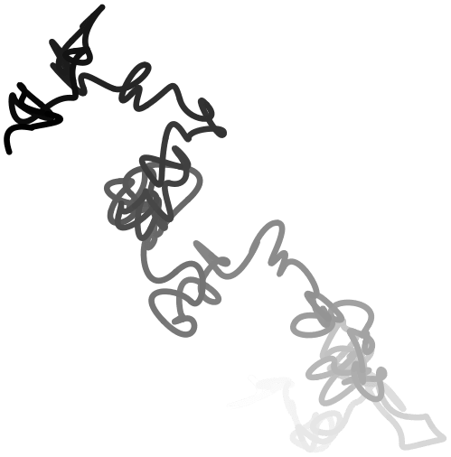
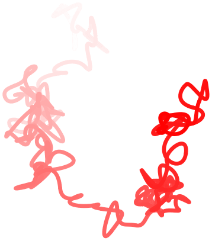

The TikZ and PGF Packages
Manual for version 3.1.9a
Part VIII Mathematical and Object-Oriented Engines
by Mark Wibrow and Till Tantau
pgf comes with two useful engines: One for doing mathematics, one for doing object-oriented programming. Both engines can be used independently of the main pgf.
The job of the mathematical engine is to support mathematical operations like addition, subtraction, multiplication and division, using both integers and non-integers, but also functions such as square-roots, sine, cosine, and generate pseudo-random numbers. Mostly, you will use the mathematical facilities of pgf indirectly, namely when you write a coordinate like (5cm*3,6cm/4), but the mathematical engine can also be used independently of pgf and TikZ.
The job of the object-oriented engine is to support simple object-oriented programming in TeX. It allows the definition of classes (without inheritance), methods, attributes and objects.
 
\pgfmathsetseed{1}
\foreach \col in
{black,red,green,blue}
{
\begin{tikzpicture}[x=10pt,y=10pt,ultra thick,baseline,line cap=round]
\coordinate (current point) at
(0,0);
\coordinate (old velocity) at
(0,0);
\coordinate (new velocity) at
(rand,rand);
\foreach \i in
{0,1,...,100}
{
\draw[\col!\i] (current point)
.. controls
++([scale=-1]old velocity) and
++(new velocity) .. ++(rand,rand)
coordinate
(current point);
\coordinate (old velocity) at
(new velocity);
\coordinate (new velocity) at
(rand,rand);
}
\end{tikzpicture}
}